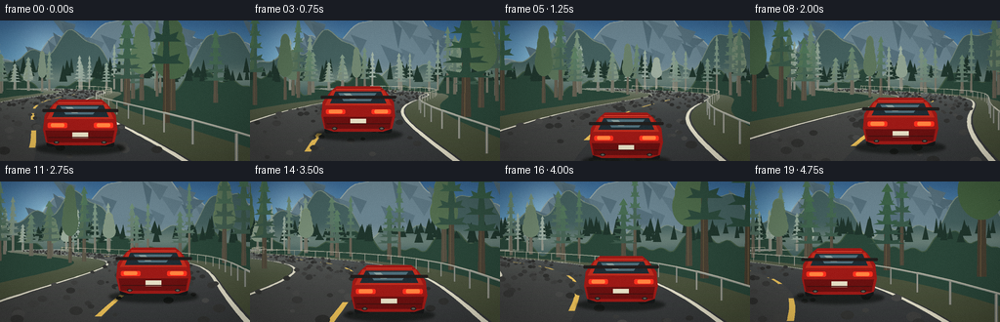
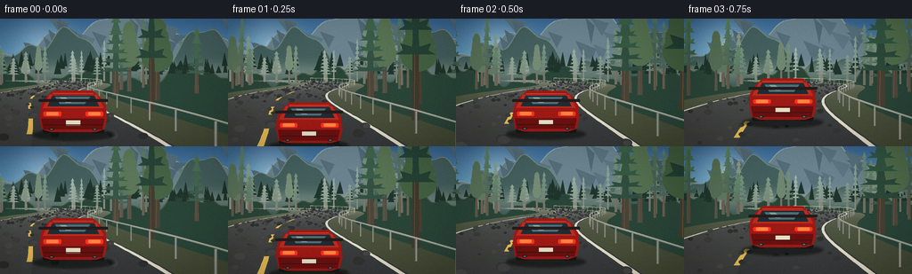
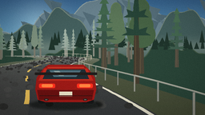
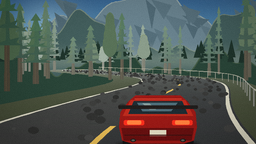
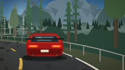
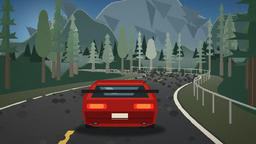

CODING AGENTS AS PIXEL WORLD MODELS
traex/DeepSeek-V4.1-Flash · instance_preservation_0029
点击播放 · 原生 RGB 像素
逐轮保存的候选
回放视频、检查图与代码变化。
每份候选均可单独播放。实际图片检查记录在下方工具轨迹中。
候选 01播放与检查图
点击播放 · 原生 RGB 像素

展开代码变化
--- 上一保存版本
+++ 本次保存版本
@@ -0,0 +1,573 @@
+from __future__ import annotations
+
+import math
+from pathlib import Path
+
+import numpy as np
+from PIL import Image, ImageDraw, ImageFilter
+
+import artifact_io
+
+
+CASE_DIR = Path(__file__).resolve().parent
+WIDTH, HEIGHT = 256, 144
+FRAME_COUNT, FPS = 20, 4.0
+SS = 3
+W, H = WIDTH * SS, HEIGHT * SS
+CX, HORIZON = W * 0.5, H * 0.43
+FOCAL = H * 3.12
+CAM_HEIGHT = 1.72
+ROAD_HALF = 3.45
+LANE_OFFSET = 1.22
+FOG = np.array([174, 187, 178], dtype=np.float32)
+
+
+def smoothstep(a: float, b: float, x: float) -> float:
+ t = np.clip((x - a) / (b - a), 0.0, 1.0)
+ return float(t * t * (3.0 - 2.0 * t))
+
+
+def mix(a, b, t):
+ return tuple(int(round(x + (y - x) * t)) for x, y in zip(a, b))
+
+
+def fogged(color, depth: float, strength: float = 0.62):
+ t = min(1.0, (depth / 88.0) ** 1.25 * strength)
+ return mix(color, tuple(FOG.astype(int)), t)
+
+
+def path_x(s: float) -> float:
+ return 9.2 * math.sin(0.029 * s + 0.15) + 3.8 * math.sin(0.073 * s + 1.18)
+
+
+def path_slope(s: float) -> float:
+ return 9.2 * 0.029 * math.cos(0.029 * s + 0.15) + 3.8 * 0.073 * math.cos(0.073 * s + 1.18)
+
+
+def camera_pose(s0: float):
+ heading = math.atan(path_slope(s0))
+ cam_x = path_x(s0) + LANE_OFFSET
+ return cam_x, heading
+
+
+def project(s: float, q: float, y: float, s0: float):
+ cam_x, heading = camera_pose(s0)
+ slope = path_slope(s)
+ tangent = math.atan(slope)
+ px = path_x(s) + q * math.cos(tangent)
+ pz = s - q * math.sin(tangent)
+ dx, dz = px - cam_x, pz - s0
+ ch, sh = math.cos(heading), math.sin(heading)
+ xcam = dx * ch - dz * sh
+ zcam = dx * sh + dz * ch
+ if zcam < 0.12:
+ return None
+ u = CX + FOCAL * xcam / zcam
+ v = HORIZON + FOCAL * (CAM_HEIGHT - y) / zcam
+ return u, v, zcam, FOCAL / zcam
+
+
+def sky_layer(frame: int) -> Image.Image:
+ stops = np.array([0.00, 0.24, 0.55, 0.78, 1.00])
+ colors = np.array(
+ [
+ [53, 99, 143],
+ [82, 137, 174],
+ [139, 178, 194],
+ [225, 199, 160],
+ [246, 207, 151],
+ ],
+ dtype=np.float32,
+ )
+ y = np.linspace(0.0, 1.0, H, dtype=np.float32)
+ rgb = np.stack([np.interp(y, stops, colors[:, i]) for i in range(3)], axis=1)
+ rgb = np.repeat(rgb[:, None, :], W, axis=1)
+
+ yy, xx = np.mgrid[0:H, 0:W].astype(np.float32)
+ sun_x, sun_y = W * 0.19, H * 0.205
+ dist = np.sqrt((xx - sun_x) ** 2 + (yy - sun_y) ** 2)
+ glow = np.exp(-(dist / (H * 0.22)) ** 2) * 52.0
+ core = np.exp(-(dist / (H * 0.026)) ** 2) * 95.0
+ warm = np.array([255.0, 226.0, 167.0], dtype=np.float32)
+ rgb += (glow + core)[..., None] * (warm / 255.0)
+
+ # A few soft, wind-stretched clouds give the sky depth without stealing focus.
+ cloud = Image.new("RGBA", (W, H), (0, 0, 0, 0))
+ cd = ImageDraw.Draw(cloud)
+ drift = -frame * 0.55
+ clouds = [
+ (0.30, 0.105, 0.23, 0.038, 92),
+ (0.55, 0.155, 0.17, 0.027, 66),
+ (0.82, 0.095, 0.20, 0.034, 72),
+ (0.04, 0.215, 0.16, 0.025, 58),
+ ]
+ for fx, fy, fw, fh, alpha in clouds:
+ x, y0 = fx * W + drift, fy * H
+ w, h = fw * W, fh * H
+ for j, (ox, oy, sw, sh, a) in enumerate(
+ [(-0.22, 0.02, 0.62, 0.65, 0.62), (0.08, -0.08, 0.55, 0.88, 0.72), (0.33, 0.03, 0.48, 0.58, 0.55)]
+ ):
+ cd.ellipse(
+ [x + ox * w - sw * w / 2, y0 + oy * h - sh * h / 2,
+ x + ox * w + sw * w / 2, y0 + oy * h + sh * h / 2],
+ fill=(255, 239, 216, int(alpha * a)),
+ )
+ cloud = cloud.filter(ImageFilter.GaussianBlur(10 * SS))
+ base = Image.fromarray(np.clip(rgb, 0, 255).astype(np.uint8)).convert("RGBA")
+ base.alpha_composite(cloud)
+ return base.convert("RGB")
+
+
+def ridge_polygon(base_y: float, amp: float, freq: float, phase: float, shift: float, fill, outline=None):
+ xs = np.arange(-24, W + 25, 5, dtype=np.float32)
+ ys = base_y + amp * np.sin(xs / W * math.tau * freq + phase)
+ ys += 0.42 * amp * np.sin(xs / W * math.tau * freq * 2.31 + phase * 1.7)
+ ys -= 0.26 * amp * np.sin(xs / W * math.tau * freq * 4.7 + phase * 0.6)
+ pts = [(float(x + shift), float(y)) for x, y in zip(xs, ys)]
+ poly = [(-30, H)] + pts + [(W + 30, H)]
+ return poly, pts
+
+
+def draw_background(img: Image.Image, frame: int, s0: float) -> Image.Image:
+ layer = img.convert("RGBA")
+ d = ImageDraw.Draw(layer, "RGBA")
+ heading = camera_pose(s0)[1]
+ base_shift = -heading * W * 0.32
+
+ poly, pts = ridge_polygon(
+ HORIZON - 48 * SS, 27 * SS, 1.12, 0.72, base_shift * 0.25,
+ (94, 120, 135), (132, 151, 154),
+ )
+ d.polygon(poly, fill=(101, 127, 139, 255))
+ d.line([(x, y) for x, y in pts[2:-2]], fill=(139, 157, 158, 210), width=max(1, SS))
+
+ # Cool, shadowed facets make the distant ridge read as rock rather than a flat cutout.
+ rng = np.random.default_rng(24)
+ for _ in range(24):
+ x = rng.uniform(0, W)
+ y = HORIZON - rng.uniform(32, 67) * SS
+ wdt = rng.uniform(8, 28) * SS
+ hgt = rng.uniform(12, 35) * SS
+ shade = int(rng.uniform(12, 28))
+ d.polygon(
+ [(x, y), (x + wdt, y + hgt * 0.3), (x + wdt * 0.62, y + hgt)],
+ fill=(max(58, 101 - shade), max(78, 127 - shade), max(88, 139 - shade), 70),
+ )
+
+ poly, pts = ridge_polygon(
+ HORIZON - 25 * SS, 19 * SS, 1.55, 2.0, base_shift * 0.48,
+ (64, 92, 91), (99, 121, 112),
+ )
+ d.polygon(poly, fill=(64, 92, 91, 255))
+ d.line([(x, y) for x, y in pts[2:-2]], fill=(111, 131, 119, 195), width=max(1, SS))
+
+ # A narrow band of valley haze separates the mountain planes.
+ haze = Image.new("RGBA", (W, H), (0, 0, 0, 0))
+ hd = ImageDraw.Draw(haze)
+ for yy in range(int(HORIZON - 20 * SS), int(HORIZON + 13 * SS)):
+ a = int(62 * math.exp(-((yy - (HORIZON - 2 * SS)) / (10 * SS)) ** 2))
+ hd.line([(0, yy), (W, yy)], fill=(208, 211, 186, a))
+ layer.alpha_composite(haze.filter(ImageFilter.GaussianBlur(2 * SS)).convert("RGBA"))
+
+ poly, pts = ridge_polygon(
+ HORIZON + 1 * SS, 9 * SS, 2.45, 4.3, base_shift * 0.72,
+ (42, 69, 57), (68, 90, 68),
+ )
+ d = ImageDraw.Draw(layer, "RGBA")
+ d.polygon(poly, fill=(39, 67, 55, 255))
+ d.line([(x, y) for x, y in pts[2:-2]], fill=(63, 87, 66, 190), width=max(1, SS))
+
+ # Fine conifer silhouettes along the far ridge create a dense mountain forest.
+ rng = np.random.default_rng(81 + frame // 4)
+ for i in range(58):
+ x = rng.uniform(-10, W + 10) + base_shift * 0.72
+ y = HORIZON - rng.uniform(-1, 10) * SS
+ hh = rng.uniform(7, 18) * SS
+ ww = rng.uniform(2.2, 4.5) * SS
+ d.polygon([(x - ww, y), (x, y - hh), (x + ww, y)], fill=(29, 51, 43, 220))
+ return layer
+
+
+def draw_ground(img: Image.Image, frame: int, s0: float) -> Image.Image:
+ layer = img.convert("RGBA")
+ d = ImageDraw.Draw(layer, "RGBA")
+
+ # The shaded earth shoulders sit under the asphalt and hide its far edges.
+ depths = np.geomspace(2.2, 102.0, 92)
+ for i in range(len(depths) - 1, 0, -1):
+ da, db = float(depths[i]), float(depths[i - 1])
+ sa, sb = s0 + da, s0 + db
+ pa_l = project(sa, -ROAD_HALF - 2.6, -0.06, s0)
+ pb_l = project(sb, -ROAD_HALF - 2.6, -0.06, s0)
+ pb_r = project(sb, ROAD_HALF + 2.2, -0.06, s0)
+ pa_r = project(sa, ROAD_HALF + 2.2, -0.06, s0)
+ if None not in (pa_l, pb_l, pb_r, pa_r):
+ color = fogged((61, 69, 48), da, 0.52)
+ d.polygon([(pa_l[0], pa_l[1]), (pb_l[0], pb_l[1]), (pb_r[0], pb_r[1]), (pa_r[0], pa_r[1])], fill=color)
+
+ pa_l = project(sa, -ROAD_HALF, 0.0, s0)
+ pb_l = project(sb, -ROAD_HALF, 0.0, s0)
+ pb_r = project(sb, ROAD_HALF, 0.0, s0)
+ pa_r = project(sa, ROAD_HALF, 0.0, s0)
+ if None in (pa_l, pb_l, pb_r, pa_r):
+ continue
+ asphalt = fogged((47, 50, 52), da, 0.58)
+ d.polygon([(pa_l[0], pa_l[1]), (pb_l[0], pb_l[1]), (pb_r[0], pb_r[1]), (pa_r[0], pa_r[1])], fill=asphalt)
+
+ # Slightly sunlit left lane and cooler shadowed right lane.
+ p_mid_a = project(sa, 0.1, 0.0, s0)
+ p_mid_b = project(sb, 0.1, 0.0, s0)
+ if None not in (p_mid_a, p_mid_b):
+ d.polygon(
+ [(pa_l[0], pa_l[1]), (pb_l[0], pb_l[1]), (p_mid_b[0], p_mid_b[1]), (p_mid_a[0], p_mid_a[1])],
+ fill=fogged((55, 57, 57), da, 0.58),
+ )
+
+ for q in (-ROAD_HALF + 0.16, ROAD_HALF - 0.16):
+ ea = project(sa, q - 0.075, 0.012, s0)
+ eb = project(sb, q - 0.075, 0.012, s0)
+ ec = project(sb, q + 0.075, 0.012, s0)
+ ed = project(sa, q + 0.075, 0.012, s0)
+ if None not in (ea, eb, ec, ed):
+ d.polygon(
+ [(ea[0], ea[1]), (eb[0], eb[1]), (ec[0], ec[1]), (ed[0], ed[1])],
+ fill=fogged((218, 215, 194), da, 0.48),
+ )
+
+ # Broken amber center line; its travel toward the camera is a strong speed cue.
+ smid = 0.5 * (sa + sb)
+ if (smid % 8.2) < 3.7:
+ ca = project(sa, -0.075, 0.014, s0)
+ cb = project(sb, -0.075, 0.014, s0)
+ cc = project(sb, 0.075, 0.014, s0)
+ cd = project(sa, 0.075, 0.014, s0)
+ if None not in (ca, cb, cc, cd):
+ d.polygon(
+ [(ca[0], ca[1]), (cb[0], cb[1]), (cc[0], cc[1]), (cd[0], cd[1])],
+ fill=fogged((226, 184, 81), da, 0.46),
+ )
+
+ # Fixed world-space grit anchors to the asphalt and slides past with the camera.
+ rng = np.random.default_rng(119)
+ grit = []
+ for _ in range(760):
+ s = rng.uniform(0, 235)
+ q = rng.uniform(-ROAD_HALF + 0.2, ROAD_HALF - 0.2)
+ tone = int(rng.uniform(-12, 18))
+ grit.append((s, q, tone, rng.uniform(0.7, 2.3)))
+ grit.sort(key=lambda item: item[0], reverse=True)
+ for s, q, tone, size in grit:
+ depth = s - s0
+ if not 2.2 < depth < 88.0:
+ continue
+ p = project(s, q, 0.02, s0)
+ if p is None:
+ continue
+ u, v, z, scale = p
+ if not (-8 < u < W + 8 and HORIZON < v < H + 5):
+ continue
+ c = int(np.clip(53 + tone, 28, 91))
+ alpha = int(np.clip(55 + 75 / max(1.0, depth * 0.12), 35, 125))
+ rr = max(0.5, size * scale * 0.075)
+ d.ellipse([u - rr, v - rr * 0.65, u + rr, v + rr * 0.65], fill=(c, c + 2, c + 1, alpha))
+ return layer
+
+
+def tree_specs():
+ rng = np.random.default_rng(20261110)
+ trees = []
+ s = -8.0
+ while s < 230.0:
+ for side in (-1, 1):
+ if rng.random() < 0.90:
+ depth_offset = rng.uniform(-1.2, 1.2)
+ q = side * (ROAD_HALF + rng.uniform(1.5, 10.5))
+ height = rng.uniform(4.8, 9.4)
+ width = rng.uniform(1.25, 2.35)
+ hue = rng.uniform(-1.0, 1.0)
+ trees.append((s + depth_offset, q, height, width, hue, side, rng.random()))
+ s += rng.uniform(3.2, 5.1)
+ return trees
+
+
+TREES = tree_specs()
+
+
+def draw_tree(d: ImageDraw.ImageDraw, tree, s0: float):
+ s, q, height, width, hue, side, variant = tree
+ depth = s - s0
+ if depth < 1.4 or depth > 98:
+ return
+ base = project(s, q, 0.0, s0)
+ top = project(s, q, height, s0)
+ if base is None or top is None:
+ return
+ u, v, z, scale = base
+ if u < -W * 0.32 or u > W * 1.32 or v < HORIZON - 5:
+ return
+ hp = max(3.0, (v - top[1]))
+ wp = max(2.0, width * scale)
+ fog_t = min(0.78, (depth / 88.0) ** 1.1 * 0.72)
+ trunk_dark = mix((52, 43, 30), tuple(FOG.astype(int)), fog_t * 0.9)
+ trunk_light = mix((86, 67, 41), tuple(FOG.astype(int)), fog_t * 0.9)
+ trunk_w = max(1.2, wp * 0.105)
+ trunk_top = v - hp * 0.74
+ d.polygon(
+ [(u - trunk_w, v), (u - trunk_w * 0.62, trunk_top), (u + trunk_w * 0.62, trunk_top), (u + trunk_w, v)],
+ fill=trunk_dark,
+ )
+ d.line([(u - trunk_w * 0.25, v), (u - trunk_w * 0.12, trunk_top)], fill=trunk_light, width=max(1, int(trunk_w * 0.22)))
+
+ if variant > 0.76:
+ # Broadleaf trees break up the conifer rhythm.
+ base_green = (50 + int(hue * 7), 82 + int(hue * 8), 48 + int(hue * 4))
+ for layer in range(4):
+ cy = v - hp * (0.50 + layer * 0.115)
+ rx = wp * (0.53 - layer * 0.075)
+ ry = hp * (0.17 - layer * 0.018)
+ c = fogged(base_green, depth, 0.76)
+ d.ellipse([u - rx, cy - ry, u + rx, cy + ry], fill=c)
+ hi = mix(c, (141, 154, 75), 0.18 if side > 0 else 0.11)
+ d.arc([u - rx, cy - ry, u + rx, cy + ry], 195, 335, fill=hi, width=max(1, int(SS * 1.2)))
+ return
+
+ palette = [
+ (24 + int(hue * 5), 58 + int(hue * 8), 43 + int(hue * 5)),
+ (31 + int(hue * 5), 72 + int(hue * 9), 48 + int(hue * 5)),
+ (37 + int(hue * 6), 82 + int(hue * 10), 52 + int(hue * 5)),
+ ]
+ layers = 5
+ for layer in range(layers):
+ frac = layer / (layers - 1)
+ y_bottom = v - hp * (0.31 + 0.115 * layer)
+ y_top = v - hp * (0.57 + 0.108 * layer)
+ half_w = wp * (0.55 - 0.075 * layer)
+ jag = wp * (0.10 + 0.012 * layer)
+ pts = [
+ (u - half_w, y_bottom),
+ (u - half_w * 0.64, y_bottom - hp * 0.018),
+ (u - half_w * 0.78, y_bottom - hp * 0.052),
+ (u - jag, y_bottom - hp * 0.035),
+ (u, y_top),
+ (u + jag, y_bottom - hp * 0.035),
+ (u + half_w * 0.78, y_bottom - hp * 0.052),
+ (u + half_w * 0.64, y_bottom - hp * 0.018),
+ (u + half_w, y_bottom),
+ ]
+ base_c = palette[min(2, int(frac * 2.5))]
+ c = fogged(base_c, depth, 0.77)
+ d.polygon(pts, fill=c)
+ if side < 0:
+ highlight = mix(c, (124, 137, 72), 0.16)
+ d.polygon(
+ [(u - half_w, y_bottom), (u - half_w * 0.64, y_bottom - hp * 0.018),
+ (u, y_top), (u - jag * 0.55, y_bottom - hp * 0.03)],
+ fill=highlight,
+ )
+ tip = fogged((41, 86, 51), depth, 0.77)
+ d.polygon([(u - wp * 0.17, v - hp * 0.92), (u, v - hp * 1.02), (u + wp * 0.17, v - hp * 0.92)], fill=tip)
+
+
+def draw_guardrail(img: Image.Image, s0: float):
+ d = ImageDraw.Draw(img, "RGBA")
+ posts = np.arange(math.floor(s0 / 2.7) * 2.7, s0 + 92, 2.7)
+ posts = posts[::-1]
+ rail_points = []
+ for s in posts:
+ depth = s - s0
+ if depth < 1.8:
+ continue
+ base = project(s, ROAD_HALF + 0.82, 0.0, s0)
+ top = project(s, ROAD_HALF + 0.82, 0.66, s0)
+ if base is None or top is None:
+ continue
+ u, v, z, scale = base
+ tu, tv = top[0], top[1]
+ rail_points.append((u, tv, depth, scale))
+ col = fogged((103, 110, 106), depth, 0.67)
+ pw = max(1.0, 0.075 * scale)
+ d.line([(u, v), (tu, tv + 0.03 * scale)], fill=col, width=max(1, int(pw)))
+ d.line([(u, v), (tu, tv + 0.03 * scale)], fill=(174, 169, 150, 115), width=max(1, int(pw * 0.32)))
+ for i in range(len(rail_points) - 1):
+ a, b = rail_points[i], rail_points[i + 1]
+ depth = min(a[2], b[2])
+ width = max(1, int(np.clip(0.08 * (a[3] + b[3]) * 0.5, 1, 7)))
+ col = fogged((133, 139, 131), depth, 0.62)
+ d.line([(a[0], a[1]), (b[0], b[1])], fill=col, width=width)
+ d.line([(a[0], a[1] - width * 0.23), (b[0], b[1] - width * 0.23)], fill=(205, 197, 173, 105), width=max(1, width // 3))
+
+
+def draw_car(img: Image.Image, frame: int, s0: float):
+ car_s = s0 + 11.3 + 0.15 * math.sin(frame * 1.27)
+ base = project(car_s, LANE_OFFSET, 0.0, s0)
+ if base is None:
+ return
+ u, v, z, scale = base
+ bob = 0.35 * math.sin(frame * 1.55) * scale
+ steer = 0.035 * math.sin(frame * 0.93) * scale
+ u += steer
+ v += bob
+ width = 1.92 * scale
+ height = 1.27 * scale
+
+ shadow = Image.new("RGBA", img.size, (0, 0, 0, 0))
+ sd = ImageDraw.Draw(shadow)
+ sd.ellipse(
+ [u - width * 0.60, v - height * 0.10, u + width * 0.60, v + height * 0.15],
+ fill=(7, 12, 10, 145),
+ )
+ shadow = shadow.filter(ImageFilter.GaussianBlur(max(1, int(SS * 1.4))))
+ img.alpha_composite(shadow.convert("RGBA"))
+ d = ImageDraw.Draw(img, "RGBA")
+
+ # Wheels and lower mechanical mass.
+ tire = (20, 23, 24, 255)
+ for sign in (-1, 1):
+ x0 = u + sign * width * 0.36
+ d.rounded_rectangle(
+ [x0 - width * 0.095, v - height * 0.31, x0 + width * 0.095, v - height * 0.01],
+ radius=max(1, int(width * 0.035)), fill=tire,
+ )
+ d.ellipse(
+ [x0 - width * 0.047, v - height * 0.23, x0 + width * 0.047, v - height * 0.09],
+ fill=(51, 55, 56, 255),
+ )
+ d.ellipse(
+ [x0 - width * 0.025, v - height * 0.19, x0 + width * 0.025, v - height * 0.12],
+ fill=(119, 118, 108, 255),
+ )
+
+ body_pts = [
+ (u - width * 0.46, v - height * 0.10),
+ (u - width * 0.50, v - height * 0.36),
+ (u - width * 0.48, v - height * 0.65),
+ (u - width * 0.37, v - height * 0.87),
+ (u - width * 0.29, v - height * 0.97),
+ (u + width * 0.29, v - height * 0.97),
+ (u + width * 0.37, v - height * 0.87),
+ (u + width * 0.48, v - height * 0.65),
+ (u + width * 0.50, v - height * 0.36),
+ (u + width * 0.46, v - height * 0.10),
+ (u + width * 0.34, v - height * 0.04),
+ (u - width * 0.34, v - height * 0.04),
+ ]
+ d.polygon(body_pts, fill=(151, 25, 22, 255))
+ d.polygon(
+ [(u - width * 0.47, v - height * 0.34), (u - width * 0.44, v - height * 0.10),
+ (u + width * 0.43, v - height * 0.10), (u + width * 0.46, v - height * 0.34)],
+ fill=(101, 16, 16, 255),
+ )
+ d.polygon(
+ [(u - width * 0.45, v - height * 0.58), (u - width * 0.35, v - height * 0.88),
+ (u + width * 0.35, v - height * 0.88), (u + width * 0.45, v - height * 0.58)],
+ fill=(183, 42, 29, 255),
+ )
+ d.polygon(
+ [(u - width * 0.38, v - height * 0.62), (u - width * 0.31, v - height * 0.86),
+ (u + width * 0.31, v - height * 0.86), (u + width * 0.38, v - height * 0.62)],
+ fill=(29, 43, 50, 255),
+ )
+ d.polygon(
+ [(u - width * 0.27, v - height * 0.83), (u - width * 0.20, v - height * 0.67),
+ (u + width * 0.17, v - height * 0.67), (u + width * 0.25, v - height * 0.83)],
+ fill=(75, 106, 118, 255),
+ )
+ d.polygon(
+ [(u - width * 0.20, v - height * 0.82), (u - width * 0.11, v - height * 0.70),
+ (u - width * 0.03, v - height * 0.70), (u - width * 0.11, v - height * 0.82)],
+ fill=(131, 153, 153, 180),
+ )
+
+ # Rear wing, lamps, bumper and plate.
+ d.rounded_rectangle(
+ [u - width * 0.51, v - height * 0.78, u + width * 0.51, v - height * 0.72],
+ radius=max(1, int(height * 0.025)), fill=(31, 29, 28, 255),
+ )
+ for sign in (-1, 1):
+ x0 = u + sign * width * 0.31
+ d.rounded_rectangle(
+ [x0 - width * 0.13, v - height * 0.50, x0 + width * 0.13, v - height * 0.40],
+ radius=max(1, int(width * 0.025)), fill=(247, 46, 29, 255),
+ )
+ d.rounded_rectangle(
+ [x0 - width * 0.09, v - height * 0.49, x0 + width * 0.09, v - height * 0.415],
+ radius=max(1, int(width * 0.018)), fill=(255, 128, 62, 255),
+ )
+ d.rectangle(
+ [u - width * 0.105, v - height * 0.30, u + width * 0.105, v - height * 0.19],
+ fill=(222, 217, 192, 255),
+ )
+ d.line(
+ [(u - width * 0.43, v - height * 0.20), (u + width * 0.43, v - height * 0.20)],
+ fill=(64, 17, 16, 210), width=max(1, int(height * 0.025)),
+ )
+ d.line(
+ [(u - width * 0.30, v - height * 0.91), (u + width * 0.30, v - height * 0.91)],
+ fill=(224, 75, 50, 220), width=max(1, int(height * 0.018)),
+ )
+ for sign in (-1, 1):
+ x0 = u + sign * width * 0.32
+ d.ellipse(
+ [x0 - width * 0.035, v - height * 0.13, x0 + width * 0.035, v - height * 0.075],
+ fill=(25, 27, 27, 255),
+ )
+ d.ellipse(
+ [x0 - width * 0.022, v - height * 0.118, x0 + width * 0.022, v - height * 0.087],
+ fill=(94, 92, 83, 255),
+ )
+
+
+def finish_frame(img: Image.Image, frame: int) -> np.ndarray:
+ arr = np.asarray(img.convert("RGB").resize((WIDTH, HEIGHT), Image.Resampling.LANCZOS), dtype=np.float32)
+ yy, xx = np.mgrid[0:HEIGHT, 0:WIDTH].astype(np.float32)
+ nx = (xx - WIDTH * 0.5) / (WIDTH * 0.5)
+ ny = (yy - HEIGHT * 0.48) / (HEIGHT * 0.56)
+ vignette = np.clip(1.06 - 0.14 * (nx * nx + ny * ny) ** 1.15, 0.83, 1.03)
+ arr *= vignette[..., None]
+ # Warm highlight lift and restrained sensor grain.
+ arr[..., 0] += 1.3
+ arr[..., 2] -= 0.5
+ rng = np.random.default_rng(900 + frame)
+ arr += rng.normal(0.0, 1.05, (HEIGHT, WIDTH, 1))
+ return np.clip(arr, 0, 255).astype(np.uint8)
+
+
+def render_frame(frame: int) -> np.ndarray:
+ s0 = 13.0 + frame * 3.12
+ sky = sky_layer(frame)
+ scene = draw_background(sky, frame, s0)
+ scene = draw_ground(scene, frame, s0)
+
+ # Distant trees, guardrail, then car, then foreground trees preserve depth order.
+ far = Image.new("RGBA", (W, H), (0, 0, 0, 0))
+ far_d = ImageDraw.Draw(far, "RGBA")
+ near = Image.new("RGBA", (W, H), (0, 0, 0, 0))
+ near_d = ImageDraw.Draw(near, "RGBA")
+ sorted_trees = sorted(TREES, key=lambda t: t[0], reverse=True)
+ for tree in sorted_trees:
+ depth = tree[0] - s0
+ if depth <= 11.4:
+ continue
+ draw_tree(far_d, tree, s0)
+ scene = Image.alpha_composite(scene.convert("RGBA"), far)
+
+ draw_guardrail(scene, s0)
+ draw_car(scene, frame, s0)
+
+ for tree in sorted_trees:
+ depth = tree[0] - s0
+ if depth > 11.4:
+ continue
+ draw_tree(near_d, tree, s0)
+ scene = Image.alpha_composite(scene.convert("RGBA"), near)
+ return finish_frame(scene, frame)
+
+
+def main():
+ frames = np.stack([render_frame(i) for i in range(FRAME_COUNT)])
+ artifact_io.save(frames, CASE_DIR)
+ print(f"Saved {len(frames)} RGB frames to {CASE_DIR}")
+
+
+if __name__ == "__main__":
+ main()
可观测工具轨迹
实际执行的命令与返回图片。
命令 1exit 0
/bin/bash -c "pwd && rg --files -g '"'!*node_modules*'"' -g '"'!*.mp4'"' -g '"'!*.mov'"' | sed -n '1,200p'"
命令 2exit 0
/bin/bash -c "printf '%s\\n' '--- prompt.txt ---'; sed -n '1,240p' prompt.txt; printf '%s\\n' '--- GENERATION_RULES.md ---'; sed -n '1,280p' GENERATION_RULES.md; printf '%s\\n' '--- task_spec.json ---'; sed -n '1,320p' task_spec.json"
命令 3exit 0
/bin/bash -c "find . -maxdepth 3 -type f -printf '%p %s bytes\\n' | sort | sed -n '1,240p'; printf '%s\\n' '--- tools ---'; command -v ffmpeg || true; command -v python3 || true; command -v blender || true; command -v convert || true; command -v magick || true; command -v node || true; command -v chromium || true; command -v google-chrome || true"
命令 4exit 0
/bin/bash -c "sed -n '1,260p' artifact_io.py"
命令 5exit 0
/bin/bash -c "sed -n '1,260p' player_template.html"
命令 6exit 0
/bin/bash -c "python3 - <<'PY' import importlib.util for m in ['numpy','PIL','cv2','imageio','scipy','matplotlib','skimage']: print(m, bool(importlib.util.find_spec(m))) PY"
命令 7exit 0
/bin/bash -c 'python3 -m py_compile generate.py'
命令 8exit 0
/bin/bash -c 'wc -l generate.py && du -h generate.py'
命令 9exit 1
/bin/bash -c 'time python3 generate.py'
命令 10exit 1
/bin/bash -c 'time python3 generate.py'
命令 11exit 0
/bin/bash -c 'time python3 generate.py'
命令 12exit 0
/bin/bash -c "python3 - <<'PY' import imageio_ffmpeg print(imageio_ffmpeg.get_ffmpeg_exe()) PY"
命令 13exit 0
/bin/bash -c "ls -lh pixels.npz index.html inspection.png transition_check.png frames | sed -n '1,120p'"
命令 14exit 0
/bin/bash -c "python3 - <<'PY'
import numpy as np
from PIL import Image
from pathlib import Path
p=Path('frames')
a=np.stack([np.asarray(Image.open(p/f'{i:02d}.png')) for i in range(20)])
print('shape/dtype', a.shape, a.dtype)
print('min/max/mean', a.min(), a.max(), a.mean(axis=(0,1,2)))
d=np.abs(np.diff(a.astype(np.int16),axis=0)).mean(axis=(1,2,3))
print('temporal mean abs diff:', np.round(d,2).tolist())
print('unique pixels frame0', len(np.unique(a[0].reshape(-1,3),axis=0)))
PY"视觉工具实际返回图片 1

视觉工具实际返回图片 2

视觉工具实际返回图片 3

视觉工具实际返回图片 4

视觉工具实际返回图片 5

视觉工具实际返回图片 6

保存候选 1 份；完成命令 14 次；可验证图片返回 6 张。原始 API 响应与完整日志保留在本地。